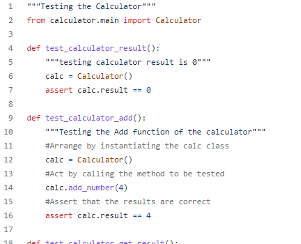
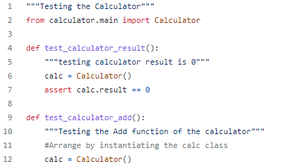
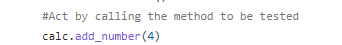

Unit Testing
Essentially, a unit test is a method that instantiates a small portion of our
application and verifies its behavior independently from other parts.
A typical unit test contains 3 phases: First, it initializes a small piece of an
application it wants to test (also known as the system under test, or SUT), then
it applies some stimulus to the system under test (usually by calling a method on it),
and finally, it observes the resulting behavior. If the observed behavior is consistent with
the expectations, the unit test passes, otherwise, it fails, indicating that there is a
problem somewhere in the system under test. These three unit test phases are also known as
Arrange, Act and Assert, or simply AAA.

AAA Testing: Arrange
Steps to follow
Use a single block of code with no empty lines.
Do not use assert in the Arrange block. If you need to make an assertion about your arrangement, then this is a smell that your arrangement is too complicated and should be extracted to a fixture or setup function and tested in its own right.
Only prepare non-deterministic results not available after action.
The arrange section should not require comments. If you have a large arrangement in your tests which is complex enough to require detailed comments then consider:
Extracting the comments into a multi-line docstring.
Extracting the arrangement code into a fixture and testing that the fixture is establishing the expected conditions as previously mentioned.

AAA Testing: Act
Steps to follow
Start every Action line with result =.
Even when there is no result from the action, capture it with result = and then assert result is None. In this way, the SUT’s behaviour is pinned.
If you struggle to write a single line action, then consider extracting some of that code into your arrangement.
The action can be wrapped in with ... raises for expected exceptions. In this case your action will be two lines surrounded by empty lines.

AAA Testing: Assert
Steps to follow
Use a single block of code with no empty lines.
First test result, then side effects.
Limit the actions that you make in this block. Ideally, no actions should happen, but that is not always possible.
Use simple blocks of assertions. If you find that you are repeatedly writing the same code to extract information from the SUT and perform assertions on it, then consider extracting an assertion helper.